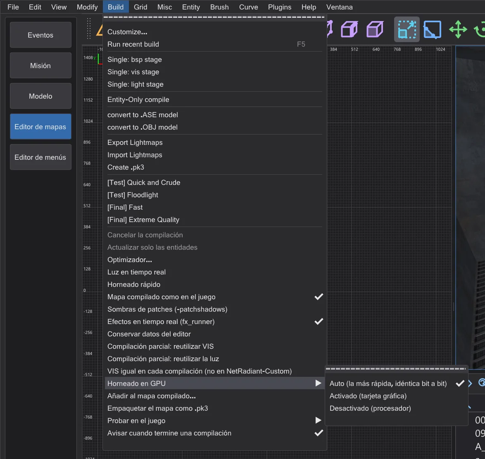
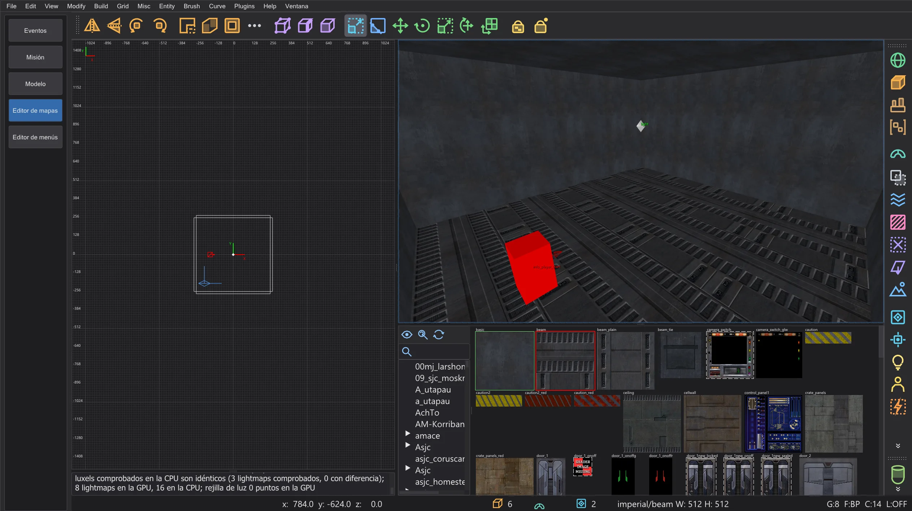

Editor de mapas: horneado en GPU
Calcula toda la luz de un mapa en la tarjeta gráfica (lightmaps, rebote y rejilla de luz), byte a byte igual que en la CPU, y mucho más rápido en mapas grandes.
Build > Horneado en GPU (no está en NetRadiant-Custom) decide dónde calcula bhed_q3map2 la luz de cada paso -light: Auto (la más rápida, idéntica bit a bit) (por defecto), Activado (tarjeta gráfica) (opción -bhedgpubake) o Desactivado (procesador). El mapa compilado es el mismo, byte a byte: la tarjeta gráfica solo es más rápida. La elección se conserva (ajuste BhedGpuBakeMode).
Auto (la más rápida, idéntica bit a bit) toma la tarjeta gráfica solo cuando su resultado es idéntico bit a bit (calcula con doble precisión) y se espera que sea más rápida: mapas grandes y rondas de rebote. Los mapas pequeños, y -samples 4 en mapas grandes, se quedan en el procesador; una tarjeta gráfica sin doble precisión nunca se elige. También recuerda, por mapa y opciones de luz, cuánto tardaron la última ejecución en procesador y la última en tarjeta gráfica, y desde entonces toma la más rápida (también para el horneado rápido). La consola nombra la elección y el motivo, por ejemplo "Horneado en GPU (Auto): procesador - poco trabajo de luz (34490 superluxels)".
Con -randomsamples ([Final] Extreme Quality) hay una tercera opción: la tarjeta gráfica calcula también los lightmaps con submuestras aleatorias (los reúne de varios bloques y los calcula juntos, mientras el procesador se encarga de los más grandes). Solo es más rápida en algunos mapas (con muchos lightmaps pequeños, como kejim_post o taspir1) y más lenta en otros (duel_mos_espa). Por eso Auto (la más rápida, idéntica bit a bit) la mide una vez, y solo después de que la tarjeta gráfica haya sido más rápida que el procesador en este mapa, y a partir de entonces la usa solo donde fue la más rápida de las tres. El resultado es el mismo, byte a byte. La consola dice entonces "Horneado en GPU (Auto): tarjeta gráfica con submuestras aleatorias - ...".

Mientras se compila el mapa, la ventana de progreso de la compilación y la línea de estado nombran la tarjeta gráfica. Tras la compilación, la consola muestra el informe de desviación: uno de cada 64 lightmaps se calcula una segunda vez en la CPU y se compara luxel a luxel. El último informe también está en la descripción emergente de Horneado en GPU. El horneado rápido de la luz en tiempo real (Editor de mapas: velocidad y luz en tiempo real) también usa la tarjeta gráfica cuando la entrada está activada.

Qué se ejecuta en la tarjeta gráfica#
- Lightmaps: para cada luxel, la aportación de cada luz con su rayo de sombra, la comprobación de estilo, el supermuestreo adaptativo de
-samples(también varios niveles), el filtro de-filtery la suma de las luces en su orden. - Rebote (
-bounce): cada ronda, con las luces de superficie que crea la radiosidad. - Rejilla de luz (la luz para modelos y jugadores): cada punto de la rejilla con todas las luces.
- En el procesador como siempre: la carga, las listas de luces, la luz de vértices, la creación de las luces de rebote, el cosido, el guardado y la escritura del .bsp, y todo lo que la tarjeta gráfica no puede hacer exactamente (mira abajo).
Por qué el resultado es el mismo#
Las tarjetas gráficas suelen calcular un poco distinto del procesador; por eso otros lightmappers por GPU dan una luz ligeramente distinta. bhed_q3map2 hace los mismos cálculos en el mismo orden que q3map2 en el procesador:
- cada operación se redondea exactamente como en el procesador (sin multiplicación-suma fusionada); las divisiones se redondean exactamente con aritmética entera;
- q3map2 normaliza vectores y saca raíces cuadradas en doble precisión; la tarjeta gráfica decide el mismo resultado redondeado con aritmética de coma flotante de precisión extra y, en los raros casos ajustados, en doble precisión;
- los rayos de sombra recorren el propio árbol de trazado de q3map2 con sus tolerancias, y el supermuestreo sigue el mismo orden de sellos que el procesador;
- nada se suma en el orden en que terminan los hilos: cada luxel suma sus luces en el orden de la lista.
Lo que la tarjeta gráfica no puede calcular exactamente (sombras alfa y filtros de luz, que necesitan la textura, un valor fuera del rango seguro, un resultado no finito) se calcula para ese lightmap (o punto de rejilla) en el procesador. Si la tarjeta gráfica falla o Windows la reinicia durante la compilación, el procesador calcula el resto. Un lightmap demasiado grande para la memoria gráfica se calcula por partes de su lista de luces.
Mientras la tarjeta gráfica hornea, el procesador trabaja a la vez: calcula los lightmaps que le deja la tarjeta gráfica, se hace cargo de los lightmaps que la tarjeta aún no ha empezado y se reparte con ella los puntos de la rejilla de luz; quien es más rápido hace más. Con -randomsamples ([Final] Extreme Quality), la tarjeta gráfica calcula cada lightmap que no necesita supermuestreo aleatorio; un lightmap con supermuestreo aleatorio se calcula en el procesador, con los mismos números aleatorios que en un solo hilo. El resultado sigue siendo idéntico bit a bit.
Cuánto más rápido#
Medido en un portátil con un Intel i9-14900HX (32 hilos) y una NVIDIA RTX 4070 Laptop GPU, todo el paso -light (mediana de tres ejecuciones). El procesador usa los 32 hilos; el horneado en GPU sigue necesitando el procesador para las partes listadas arriba, así que la ganancia es mayor en mapas grandes con muchas luces y rondas de rebote.
| Mapa | Opciones | Procesador | Tarjeta gráfica | Luxels iguales |
|---|---|---|---|---|
| mp__duel1 | -fast -patchshadows -samples 2 -filter -bounce 8 | 1.8 s | 1.2 s | 100 % |
| mp__duel1 | -fast -patchshadows -samples 2 -filter | 0.4 s | 0.4 s | 100 % |
| mp__duel1 | -fast -patchshadows -samples 4 -filter -bounce 2 | 1.1 s | 0.8 s | 100 % |
| md_ch_ben | -fast -patchshadows -samples 2 -filter -bounce 8 | 2.5 s | 2.2 s | 100 % |
| md_ch_ben | -fast -patchshadows -samples 2 -filter | 1.7 s | 1.6 s | 100 % |
| md_ch_ben | -fast -patchshadows -samples 4 -filter -bounce 2 | 2.3 s | 2.1 s | 100 % |
| kejim_post | -fast -filter -super 2 | 8.5 s | 6.2 s | 100 % |
| kejim_post | -fast -filter -super 2 -bounce 2 | 48.8 s | 20.0 s | 100 % |
| kejim_post | -fast -filter -super 2 -samples 3 | 9.0 s | 7.3 s | 100 % |
| md_am_sith | -fast -patchshadows -samples 2 -filter -bounce 8 | 62.0 s | 31.3 s | 100 % |
| md_am_sith | -fast -patchshadows -samples 2 -filter | 31.7 s | 12.1 s | 100 % |
| md_am_sith | -fast -patchshadows -samples 4 -filter -bounce 2 | 52.9 s | 28.0 s | 100 % |
| duel_mygeeto | -fast -patchshadows -samples 2 -filter -bounce 8 | 74.3 s | 47.1 s | 100 % |
| duel_mygeeto | -fast -patchshadows -samples 2 -filter | 31.6 s | 16.6 s | 100 % |
| duel_mygeeto | -fast -patchshadows -samples 4 -filter -bounce 2 | 67.2 s | 101.3 s | 100 % |
-samples 4 (101 s frente a 67 s); el supermuestreo profundo en muchos bordes de sombra se ramifica distinto en cada luxel, y las tarjetas gráficas son lentas en eso. Con -samples 2 (el menú Build) cada mapa medido fue igual de rápido o más.Para la línea de comandos#
-bhedgpubake: la luz en la tarjeta gráfica (con-light).-bhedgpubakeauto: lo más rápido de procesador y tarjeta gráfica, la tarjeta gráfica solo si es idéntica bit a bit;-bhedgpubakezeiten <ms cpu> <ms gpu>da los tiempos medidos de las últimas ejecuciones (0 = desconocido).-bhedgpubakecheck N: uno de cada N lightmaps se calcula también en la CPU (por defecto 64, hasta un millón de pares de luz y luxel;1los comprueba todos,0ninguno). El informe también se escribe en<mapa>.bhedgpu.txt.-bhedgpuadapter No parte del nombre: qué tarjeta gráfica (si no, la más rápida).
-bhedgpudxr con -bhedgpu): traza los rayos de sombra aproximadamente el doble de rápido, pero sin las tolerancias de q3map2 falla cerca del 0,15 % de los impactos y no ve las partes sólidas del árbol de trazado; y los rayos de sombra son solo el 7-8 % del tiempo de un horneado en GPU. Por eso no se usa para hornear.